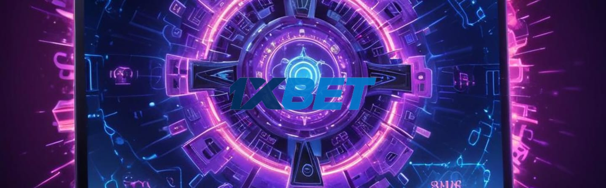

1xBet — официальное онлайн-казино
1xBet — международное онлайн-казино, которое работает в цифровом формате и предлагает доступ к разным игровым разделам. На 1xbet официальном сайте пользователи могут найти широкий выбор игр, от классических слотов до живых дилеров и спортивных ставок.
Играть сейчасПлатформа отличается удобным интерфейсом и поддерживает стабильный 1хбет вход, что обеспечивает быстрое подключение к аккаунту. В случае блокировок для игроков доступны 1xbet зеркало и 1хбет зеркало, которые помогают обойти ограничения и продолжать игру без перерывов.
Актуальное 1xbet зеркало сегодня регулярно обновляется, чтобы пользователи имели доступ к полноценному функционалу сайта. 1xbet зеркало рабочее является важным инструментом, учитывая особенности локальных ограничений на азартные игры. Благодаря этому, 1хбет сохраняет статус одного из популярных и доступных онлайн-казино на мировом рынке. Все операции, включая регистрацию, пополнение счёта и вывод средств, проходят через защищённые каналы, что гарантирует безопасность.
Что представляет собой онлайн-казино 1xBet
1xBet — это единая онлайн-платформа, которая объединяет множество игровых направлений в одном месте. На 1xbet официальном сайте можно найти разнообразные развлечения: от классических казино-игр до спортивных ставок и виртуального покера. Вся система построена таким образом, что пользователь заводит один аккаунт и получает доступ ко всем функциям без лишних регистраций.
Основная особенность сервиса — это простой и удобный интерфейс, который позволяет быстро переключаться между разделами, будь то слот автоматы, карточные игры или лайв-казино. Чтобы войти в систему, используется 1хбет вход, а при проблемах с доступом помогут 1xbet зеркало или 1хбет зеркало.
Кроме стандартного зеркала, нередко требуется актуальное 1xbet зеркало или 1xbet зеркало сегодня, которые обеспечивают стабильную работу сайта при блокировках. Рабочее 1xbet зеркало поддерживается регулярно, что позволяет пользователям сохранять постоянный доступ к платформе 1хбет.
Структура платформы продумана для удобства — все изменения состояния аккаунта, история игр и финансовая часть синхронизируются мгновенно. Это позволяет не отвлекаться на технические детали и сосредотачиваться на игровом процессе.
Попробовать сейчасОфициальный сайт онлайн-казино 1xBet
Официальный формат работы 1xbet организован через единый интерфейс, где доступны все игровые разделы и сервисы. На 1xbet официальный сайт можно быстро перейти к нужным категориям, воспользовавшись удобной навигацией. Всё расположено логично: слева или сверху – ключевые меню, позволяющие добраться до ставок, азартных игр и акций без лишних кликов.
Для обхода блокировок пользователи 1хбет применяют 1xbet зеркало – рабочее и актуальное решение для доступа к платформе. Актуальное 1xbet зеркало регулярно обновляется, чтобы обеспечить стабильный 1хбет вход. Сегодня 1xbet зеркало предоставляет полную версию сайта с тем же функционалом, что и основная платформа.
Через 1хбет зеркало удобно пользоваться личным кабинетом, вводить и выводить средства, а также общаться со службой поддержки. Интерфейс адаптирован под разные устройства, что делает посещение 1xbet комфортным как на компьютере, так и на смартфоне. Обеспечена высокая скорость загрузки и надежность работы — всё, что нужно для стабильного времяпровождения.
Вход в личный кабинет 1xBet
Авторизация на 1xBet официальный сайт открывает доступ ко множеству функций платформы. Через 1хбет вход пользователь может управлять своей учетной записью, следить за балансом, ставить ставки и просматривать историю транзакций. Личный кабинет — это центр контроля, который позволяет быстро и удобно обновлять личные данные и настраивать параметры безопасности.
В случае блокировок основной домен может быть недоступен, тогда на помощь приходят 1xbet зеркало или 1хбет зеркало. Особенно важны 1xbet зеркало рабочее и актуальное 1xbet зеркало, которые обеспечивают стабильный доступ к сервису. 1xbet зеркало сегодня используется, чтобы обойти возможные ограничения и продолжить пользоваться всеми возможностями платформы без перебоев.
Такой подход гарантирует, что страница входа останется доступной, а взаимодействие с сервисом — беспрерывным, что важней для постоянных пользователей 1xbet и 1хбет.
Регистрация в онлайн-казино 1xBet
Создание аккаунта на 1xbet — обязательный шаг для пользователей, которые хотят полноценно участвовать в играх и ставках. Регистрация позволяет получить доступ к личному кабинету на 1xbet официальном сайте, где хранятся данные и история активности. Чтобы обойти блокировки, часто используют 1xbet зеркало или 1хбет зеркало, предоставляющее рабочий вход для всех функций. Актуальное 1xbet зеркало сегодня помогает быстрее попасть на платформу без проблем с доступом.
После регистрации открываются возможности пополнения баланса, вывода выигрышей, а также участие в бонусных программах. В случае недоступности основного сайта, 1хбет вход через зеркало становится единственным способом продолжить игру. Важно выбирать только проверенные 1xbet зеркало рабочее, чтобы сохранить безопасность аккаунта и личных данных. Таким образом, регистрация — стартовая точка для пользования казино 1хбет и успешного взаимодействия с платформой.
ЗарегистрироватьсяИгровые разделы онлайн-казино 1xBet
Онлайн-казино 1xbet предлагает разнообразные игровые форматы, которые охватывают интересы широкой аудитории. На 1xbet официальном сайте доступен как классический набор слотов, так и живые игры с настоящими дилерами, создающие атмосферу настоящего казино. Важно, что игроки могут легко найти нужный раздел благодаря удобному интерфейсу после 1хбет входа.
Для тех, кто сталкивается с блокировками, регулярно обновляется 1xbet зеркало — рабочее и актуальное 1xbet зеркало сегодня обеспечивает беспрепятственный доступ к платформе. Аналогично работает 1хбет зеркало, позволяя не прерывать игровой процесс и сохранять безопасность личных данных.
Кроме стандартных разделов, 1хбет выделяется поддержкой спортивных ставок, что дает пользователям возможность переключаться между азартом в казино и беттингом. Такой баланс форматов делает 1xbet универсальным сервисом, который поддерживается за счет стабильных и быстрых зеркал, чтобы каждый мог выбрать удобный вариант доступа.
Зеркало 1xBet как формат доступа к онлайн-казино
Зеркало 1xbet — это альтернативный адрес, через который пользователи могут получить доступ к 1xbet официальному сайту. По сути, 1xbet зеркало представляет собой точную копию платформы с тем же функционалом и интерфейсом. Пользователь, заходя через 1хбет зеркало, видит привычный интерфейс, может выполнять те же действия и пользоваться всеми возможностями, доступными на основном ресурсе.
Важно, что актуальное 1xbet зеркало всегда рабочее и полностью повторяет возможности оригинального сайта. Это позволяет обеспечить стабильный 1хбет вход, даже если основной адрес временно недоступен. Зеркало 1xbet сегодня широко используется в сфере онлайн-казино и ставок, так как обеспечивает непрерывный доступ к сервису.
Таким образом, 1xbet зеркало рабочее — это не просто запасной вариант, а полноценная рабочая версия сайта, сохраняющая все функции и интерфейс 1хбет. Это удобный формат доступа к онлайн-казино для тех, кто сталкивается с ограничениями на основной адрес 1xbet официальный сайт.
Актуальное зеркало 1xBet и единый аккаунт
Переход на 1xbet официальный сайт с помощью актуального 1xbet зеркала облегчает доступ к полному функционалу без повторной регистрации. Все 1xbet зеркала, включая 1хбет зеркало сегодня, работают с единой системой учетных записей. Это значит, что 1хбет вход через рабочее зеркало полностью идентичен основному сайту – ваши данные и баланс сохраняются.
1xbet зеркало рабочее служит альтернативой, когда доступ к основному ресурсу ограничен. При этом не нужно создавать новый аккаунт или восстанавливать пароль, поскольку используется единая база пользователей. Такой подход помогает избежать проблем с входом и гарантирует сохранность личных настроек и истории ставок.
Удобство единого аккаунта особенно важно для тех, кто часто сталкивается с блокировками и ищет быстрое решение. Благодаря этому, при работе с 1xbet зеркало вы получаете ту же функциональность и безопасность, что и на 1xbet официальном сайте.
Безопасность данных пользователей в онлайн-казино 1xBet
Онлайн-казино 1xbet уделяет внимание защите личных данных при работе с аккаунтами на 1xbet официальный сайт. При входе в систему, будь то через 1хбет вход или через 1xbet зеркало, информация пользователей обрабатывается с учётом конфиденциальности. В случае блокировок основного сайта, актуальное 1xbet зеркало или 1xbet зеркало сегодня позволяет получить доступ к аккаунту без риска для данных.
Использование 1xbet зеркал помогает обходить технические ограничения. При этом важно выбирать 1xbet зеркало рабочее и проверенное, чтобы не столкнуться с фишингом. В 1хбет данные пользователей сохраняются в рамках внутренней политики, что снижает вероятность несанкционированного доступа.
Обращение через официальные ресурсы 1хбет гарантирует большую защиту. Пользователям советуют не передавать доступы третьим лицам, даже если говорится об «актуальном 1xbet зеркале». Соблюдение таких правил помогает сохранять безопасность аккаунта и личной информации.
Использование онлайн-казино 1xBet на разных устройствах
Онлайн-казино 1xbet официальный сайт доступен как с компьютеров, так и с мобильных устройств. При входе на платформу пользователи могут использовать любой вариант – через браузер на ПК или через мобильное приложение. Интерфейс 1хбет адаптирован под разные экраны, что обеспечивает одинаково комфортный и понятный опыт на телефонах, планшетах и десктопах.
Важно, что 1хбет вход происходит быстро и стабильно, даже если основной сайт временно недоступен. Здесь на помощь приходят 1xbet зеркало и 1хбет зеркало рабочее, которые предоставляют зеркальные копии ресурса с актуальными данными. Благодаря актуальному 1xbet зеркалу пользователи могут продолжать игру без сбоев и с потерей минимального времени.
Использование 1xbet зеркала сегодня особенно актуально в регионах с ограниченным доступом. Зеркала повторяют все функции официального сайта 1хбет – ставки, выводы, бонусы и личный кабинет. Таким образом, обеспечивается единый пользовательский опыт вне зависимости от выбранного устройства и способа доступа.
Возможные технические особенности работы 1xBet
На 1xbet официальный сайт регулярно проводятся временные обновления и профилактические работы. Это стандартная практика для онлайн-казино, которая помогает поддерживать стабильность и безопасность платформы. В периоды таких обновлений доступ к сайту может временно ограничиваться, что затрагивает и 1хбет вход для пользователей.
Из-за особенностей работы сети и блокировок некоторых стран нередко возникает потребность использовать 1xbet зеркало. Это альтернативные адреса, которые позволяют зайти на платформу при проблемах с основным доменом. Актуальное 1xbet зеркало обновляется регулярно, чтобы гарантировать доступ в любое время.
Также, важно учитывать, что 1xbet зеркало сегодня может отличаться от прошлых версий по функциональности или интерфейсу, но обычно сохраняет все возможности основного сайта. Рабочее 1xbet зеркало обеспечивает надежный обход ограничений без потери удобства для игрока. Аналогично, 1хбет зеркало применяется, если возникают технические перебои или блокировки, влияющие на стабильность доступа.
Таким образом, временные технические ограничения и необходимость использования зеркал — типичные явления для платформ типа 1xbet. Пользователям стоит быть готовыми к таким ситуациям и следить за обновлениями, чтобы всегда иметь возможность комфортно заходить на сайт и пользоваться услугами 1хбет.
Для кого подходит онлайн-казино 1xBet
Онлайн-казино 1хбет подходит как для новичков, так и для опытных игроков. Тем, кто только начинает знакомство с цифровыми игровыми платформами, 1xbet официальный сайт предлагает простой интерфейс и интуитивно понятный 1хбет вход. Более опытные пользователи ценят широкий выбор игр и возможность быстро найти актуальное 1xbet зеркало для стабильного доступа.
Из-за ограничений в некоторых регионах часто возникают сложности с доступом. В таких случаях актуальное 1xbet зеркало сегодня помогает продолжать игру без перебоев. Пользователям, знакомым с 1xbet и 1хбет, важно иметь рабочее 1xbet зеркало, которое бы обеспечивало защиту данных и стабильную связь с платформой. 1xbet зеркало рабочее позволяет сохранять доступ к основным функциям без задержек и сбоев.
В итоге, 1xbet и 1хбет предлагают удобные решения для всех, кто интересуется азартными играми в интернете, независимо от опыта и уровня подготовки.
Начать игратьЧасто задаваемые вопросы об онлайн-казино 1xBet
Пользователи 1xbet часто сталкиваются с вопросами, связанными с доступом к 1хбет и его официальному сайту. Иногда возникают сложности с входом, поэтому многие ищут рабочее 1xbet зеркало или актуальное 1xbet зеркало сегодня. Разберём главные моменты, которые помогут разобраться в функциях и возможностях платформы 1хбет.
1xbet официальный сайт — это основной ресурс компании, где доступны все услуги и игры. Из-за блокировок иногда доступ к нему ограничен, тогда пользователи обращаются к 1xbet зеркалам для обхода запретов.
Для 1хбет вход требуется использовать логин и пароль, которые вы указали при регистрации. При проблемах с доступом стоит попробовать использовать 1xbet зеркало рабочее, которое актуально и безопасно.
1xbet зеркало — это копия официального сайта, расположенная на другом домене. Оно помогает обходить блокировки и сохранять доступ к платформе. Благодаря зеркалам пользователи всегда могут найти актуальное 1xbet зеркало сегодня для стабильной работы.
Актуальное 1xbet зеркало сегодня часто публикуется на форумах и тематических сайтах. Важно выбирать проверенные источники, чтобы избежать мошенничества и сохранить безопасность при работе с 1хбет.
1xBet — это международное онлайн-казино, известное широким выбором игр и удобным интерфейсом. Официальный сайт 1xbet предлагает доступ к слотам, ставкам на спорт и другим развлечениям. Для игроков из регионов с ограничениями предусмотрен 1хбет вход через актуальное 1xbet зеркало.
Регистрация на 1xbet официальном сайте требуется для доступа к полному функционалу платформы. Через личный кабинет можно делать ставки, пополнять счет и выводить выигрыш. При входе через 1хбет вход или актуальное 1xbet зеркало система идентифицирует пользователя.
Рабочее зеркало 1xBet — это альтернативный адрес, через который можно попасть на 1xbet официальный сайт, если основной ресурс недоступен. Это актуальная версия онлайн-казино и букмекерской платформы с полным функционалом, позволяющая осуществлять 1хбет вход, делать ставки и использовать все услуги сервиса без ограничений.
Использование 1xbet зеркала позволяет сохранить доступ к функциям платформы при временной недоступности основного сайта. Важно выбирать актуальное и рабочее 1xbet зеркало только из официальных источников, чтобы защитить личные данные и обеспечить безопасность при игре.
ℹ️ Информация подготовлена в ознакомительных целях. Редакция не несёт ответственности за возможные последствия использования данных материалов. Азартные игры могут вызывать зависимость. Играйте ответственно.